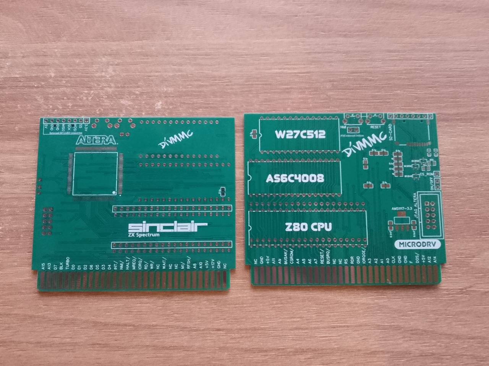

DivMMC від microDRV — це один із найкомпактніших та найстабільніших інтерфейсів для сучасного ZX Spectrum. Якщо ви втомилися від магнітофонних стрічок та довгих завантажень, цей пристрій — саме те, що вам потрібно.
Дана пропозиція включає чисту друковану плату високої якості (маска, шовкографія). Вона ідеально підходит для DIY-ентузіастів, які хочуть самостійно зібрати пристрій. Дизайн microDRV відрізняється простотою збірки та мінімальною кількістю дефіцитних компонентів. Після збірки ви зможете миттєво завантажувати ігри у форматах .TAP, .SNA, .Z80 безпосередньо з SD-карти.
